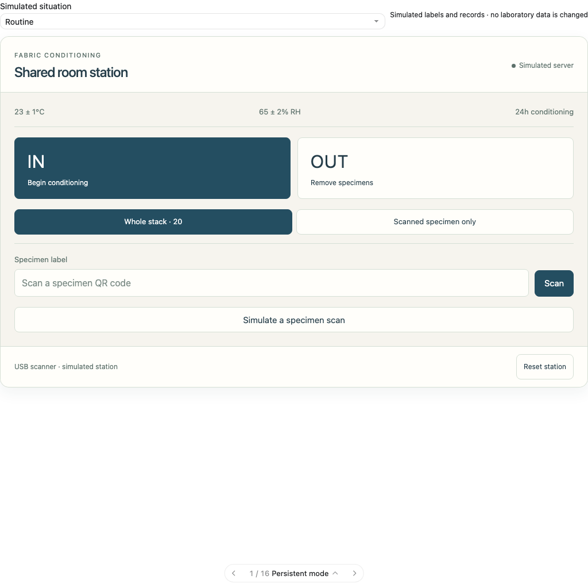
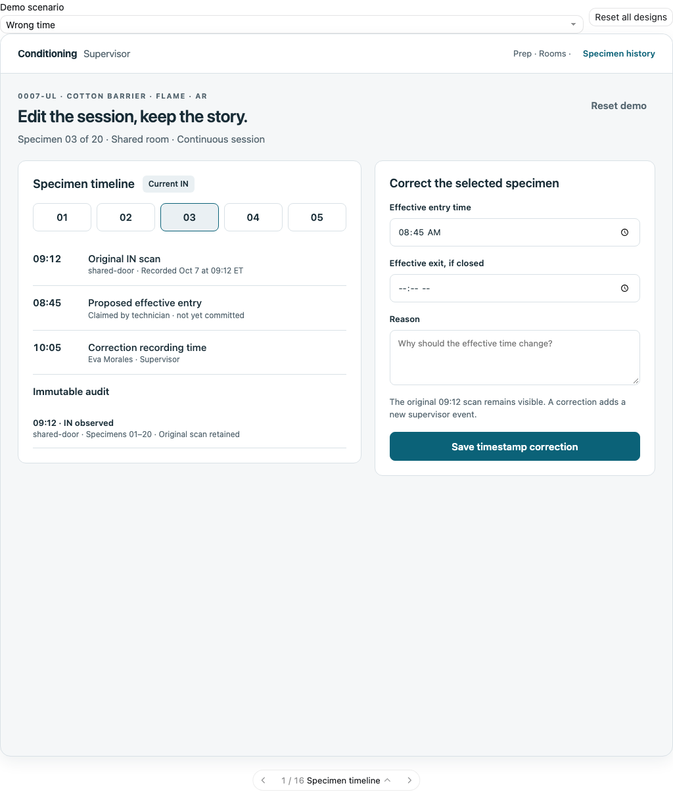
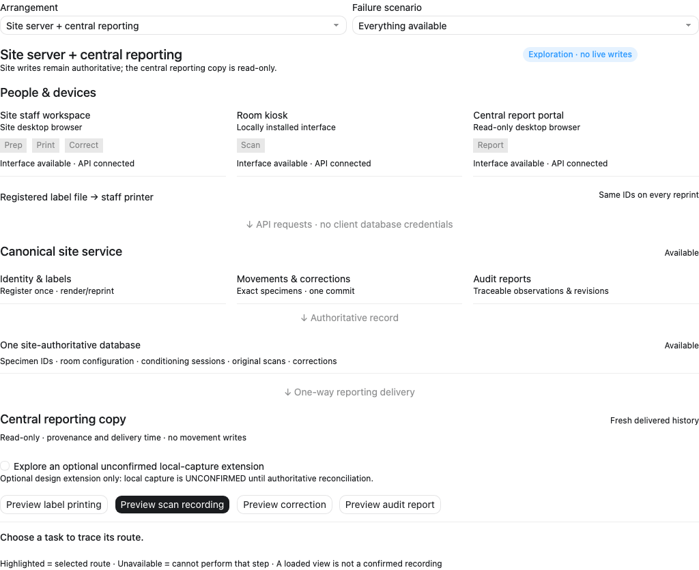

Individual integer IDs, one conditioning period, bottom dock with review and whole-transaction Undo, and a log that scrolls independently.
Open the focused prototypes8 fixed-size scanner layouts and 6 desktop transaction-log editors. Persistent IN/OUT, scrolling middle content, numbered selection popups, and direct editing of movements.
Open round twoHow should scanning and corrections actually work?
Try 16 scanner designs, 16 correction designs, and 8 ways to arrange the lab’s tools. The differences include hardware, actions, permissions, and when a movement is recorded.
Open all 40 in one explorer
Room scanning
Touchscreen modes, dedicated IN/OUT scanners, command cards, specimen grids, staging trays, and handheld capture.
Try scanner designs
Correcting records
Timelines, editable ledgers, guided fixes, undo previews, bulk changes, incident capture, and approval queues.
Try correction designs
Separate tools, shared records
Explore how prep, printing, room stations, supervisor editing, and reporting can live on different devices.
Explore arrangementsEach concept has local demo state. Actions do not touch registered specimens, the live tracker, or its database. Concepts that need new backend behavior are identified in their tradeoffs below.
Three useful starting tours
Mode versus physical direction
Compare Persistent mode, Dedicated lanes, and Scanner command cards. Try a repeat scan and an early checkout in each.
Selection versus scan collection
Compare Numbered specimen grid and Individual scan basket. Move specimens 2 and 5, then try a mixed stack.
Immediate fix versus review
Compare Specimen timeline, Before and after comparison, and Two person approval queue. Correct an entry time and inspect what remains in the audit history.
Concept catalogue
Your shortlist
Pin concepts to compare their functional implications here. Your choices are saved in this browser.
The questions behind the screens
- What selects IN or OUT? A persistent touchscreen mode, a dedicated scanner, a command card, a physical button, or a state-based suggestion?
- When does a scan become a recorded movement? Immediately after database confirmation, after a review button, or after committing a staged collection?
- What defines the moving group? The original registered stack, an explicit numbered selection, or specimens collected by individual scans?
- Who can correct a record? An authenticated supervisor, an operator who submits a request, or two reviewers acting separately?
- What is the correction unit? One event, a specimen session, a selected group, a project, or an evidence-backed case?
- What is still useful during a failure? Locally displayed station screens and previously loaded views can remain usable; a confirmed movement needs the authoritative service.
- Which tools belong together? Printing can run on a staff PC, scanning on room devices, and corrections in a desktop portal while all use the same identities and audit records.